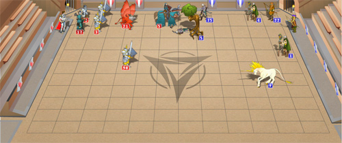

Турниры
Турниры - это система поединков между
игроками одного боевого уровня. Принять участие в турнире может любой
персонаж, достигший 3-го уровня. Вступительный взнос оплачивается
только один раз – участие в турнире осуществляется в удобное для игрока
время, но только до тех пор, пока открыта арена.

Правила турнира
1) Турнир проводится в течение
нескольких дней, время работы турнирной арены: с 8 часов утра до 3
часов ночи. Вся информация о текущих или планируемых турнирах приведена
на отдельной вкладке раздела Битвы.
2) Для участия в турнире игроку
необходимо оплатить вступительный взнос. Оплата происходит только один
раз в момент вступления в турнирную заявку. Заявки автоматически
формируются каждые полчаса в *:00 и *:30 минут, продолжительностью 10
минут.
3) Подбор противника
аналогичного уровня среди других участников производится системой
турнира. Если соперника найти не удается, персонаж автоматически
исключается из заявки.
4) За турнирные бои начисляется
как боевой опыт, так и умения фракций, увеличенные на коэффициент
турнира.
5) Система турнира не позволит
персонажу участника перейти на следующий боевой уровень, даже если для
этого набрано необходимое количество боевого опыта (не относится к
моменту регистрации на турнире и смешанному турниру). Для повышения
уровня необходимо провести любой бой (например, охоту) – опыт будет
разморожен и персонаж получит левелап. Будьте осторожны, не участвуйте
в других боях, если количество опыта достаточно для нового боевого
уровня, а вы хотите закончить турнир на текущем уровне.
6) Игроки могут участвовать в
разных "весовых" категориях в пределах одного турнирного цикла. Для
этого персонаж должен завершить участие в турнире на своем боевом
уровне, после чего, перейдя на следующий – продолжить.
7) Победители каждого турнира
определяются по накопленным очкам – всего существует три призовых
места. Если победителей турнира несколько, то призовой фонд делится
поровну между ними.
8) Дополнительным
персонажам разрешено участвовать в турнирах. Однако игрок должен
следить, чтобы основной и дополнительные персонажи не пересекались
между собой в одном бою. Если это произойдет, игрок может быть
дисквалифицирован из турнира без возврата вступительного взноса. Чтобы
исключить совместные бои – необходимо принимать участие персонажами в
разных заявках (периодах).
У каждого турнира есть свои собственные
ограничения на допустимую амуницию, общее количество поединков и
поражений. Если персонаж не обмундирован соответствующим образом - он
не сможет вступить в заявку. Если количество проведенных боев или
поражений достигает предела, персонаж прекращает свое участие в
турнире.
По типу вооружения турниры делятся на три
вида:
1) "Без оружия".
Запрещены любое оружие и доспехи.
2) "Стандарт".
Персонаж не допускается на арену, если у него нет минимального
комплекта доспехов, который определяется суммой ОА (очков амуниции).
Разрешена только амуниция из государственного магазина
артефактов. Артефакты, модифицированные в гильдии оружейников, работают
на турнире так же, как обычные.
3) "Без ограничений".
Персонажи могут принять участие в турнире независимо от одетых
доспехов. Разрешается использование раритетов, модифицированные
артефакты работают в полной мере.
Виды турниров
Малый турнир
Турнирные бои проходят по схеме дуэлей 1 на 1. Во время всего турнира
два игрока могут встретиться только один раз. Каждая победа в поединке
дает персонажу 1 очко турнира. Игроки от 9-го уровня, вступившие в гильдию
тактиков, получают 1 очко этой гильдии за каждую победу на
турнире. За поражение или ничью очки не начисляются.
Парный турнир
Турнирные бои проходят по схеме групповых боёв 2 на 2, каждый герой
может провести отведённое число боёв как в командном зачете, так и в
случайном. Для выбора определённого напарника и участия в командном
зачёте перед подачей заявки необходимо выбрать в списке команды одного
из ваших друзей (заранее добавленного в разделе "Ваши друзья"),
после чего подать заявку в турнир. Заявка будет обработана только в том
случае, если ваш друг со своей стороны выберет вас в качестве команды.
Для поиска случайного напарника в списке команды установлено значение
«Случайный зачёт». Два зачета независимы друг от друга.
Для удобного поиска напарника предусмотрен специальный чат на время
турнира, в который можно попасть, нажав на «Поиск напарника в чате» на
странице турнира.
Игроки от 9-го уровня, вступившие в гильдию
тактиков, получают по 1.2 очка этой гильдии за каждую победу
на турнире (за поражение очки ГТ не даются).
Парный турнир плюс
Данный тип турнир обладает той же системой проведения боев, что и
"Парный турнир", за исключением награждения.
Парный турнир энергии
Данный тип турнира обладает той же системой проведения боев, что и
"Парный турнир", за исключением некоторых отличий в механике:
- Армия набирается за кристаллы;
- Выбранные навыки не работают;
- Умения и способности фракций не работают;
- Бои возможны только в артефактах из магазина, улучшения артефактов не
работают;
- Кристаллы должны быть распределены на отряды и параметры, чтобы не
осталось свободных кристаллов для их увеличения;
- Начальное количество кристаллов зависит от уровня героя. Каждый день
перед утренним запуском турнира количество кристаллов увеличивается у
всех участников независимо от числа побед, благодаря чему бои и тактика
на каждом боевом уровне отличаются день ото дня.
Смешанный турнир
Турнир с уникальными групповыми боями со случайным распределением
команд, которые в обычных групповых боях собрать довольно сложно.
Например, на турнире плечом к плечу могут встать герои пятого и
пятнадцатого уровней против трёх героев девятого уровня. Команды
распределяются таким образом, чтобы сделать бой как можно интереснее и
наиболее равным для каждой из сторон. После каждого боя автоматически
корректируются коэффициенты сил, чтобы в последующем не допустить
неравные бои.
Смешанный турнир плюс
Данный тип турнира обладает той же системой проведения боев, что и
"Смешанный турнир", за исключением награждения.
Темный смешанный турнир
Данный тип турнира обладает той же системой проведения боев, что и
"Смешанный турнир", за исключением награждения, обязательной
комплектации шести примерно равных героев в зависимости от боевого
уровня и фракции, и скрытия ников героев.
Тёмный турнир
Турнирные бои проходят по схеме "бои втёмную", 6 игроков, каждый сам за
себя. Во время всего турнира определенная шестерка игроков может
встретиться только один раз. Первый выбывший с поля боя не получает
очков, второй получает 1 очко, третий 2 очка, четвёртый 3 очка, пятый
4, а победитель получает 5 очков за бой. Ввиду необходимости
укомплектовывать бои 6-ю игроками, пять игроков могут быть исключены из
заявки турнира. Игроки вступившие в заявку раньше, имеют большее шансов
попасть в бой.
Особенности боёв в тёмном турнире:
- Текущий id боя скрыт;
- Бои турнира скрыты в списке боев;
- Бои турнира скрыты в протоколе других игроков до окончания турнира;
- Ники героев скрыты в боях и протоколах до окончания турнира;
- Просмотр турнирного боя доступен только его участникам;
- Игроки от 9-го уровня, вступившие в гильдию
тактиков, получают по 0.3 очка этой гильдии за каждое очко в
турнире.
- На поле боя присутствует нейтральная Башня Тьмы.
Каждый раз, получая свой ход, она накладывает случайное групповое (на
все армии одного игрока) заклинание школы магии Тьмы (кроме Разложения)
на игрока с наибольшим общим количеством здоровья войск.
Чем
больше войска героя не совершают активных действий, тем больше шансов
на появление самоуправства - явления, при котором на один ход
управление войсками игрока берет на себя компьютер.
Темный турнир плюс
Данный тип турнира обладает той же системой проведения боев, что и
"Темный турнир", за исключением награждения.
ТреТёмный турнир
Видоизменённый Тёмный турнир. Бои проводятся аналогично - по схеме "бои
в темную", 6 равноуровневых игроков, каждый сам за себя.
Противоборствующие стороны: герои Империи, воины Алека (управляются
ИИ), воины Рейзара (управляются ИИ) – по два героя на арене с каждой
стороны. Все имена и отличительные признаки героев скрываются под
действием «тёмной» арены. Первый выбывший с поля боя не получает очков,
второй получает 1 очко, третий 2 очка, четвёртый 3 очка, пятый 4, а
победитель получает 5 очков за бой. Кроме того, помимо индивидуального
подсчёта очков ведётся и командный.
- Игроки от 9-го уровня, вступившие в гильдию
тактиков, получают по 0.3 очка этой гильдии за каждое очко в
турнире.
Чем
больше войска героя не совершают активных действий, тем больше шансов
на появление самоуправства - явления, при котором на один ход
управление войсками игрока берет на себя компьютер.
Турнир на выживание
Этот турнир – соревнование особого типа. Игроки сражаются на арене с
ордами нейтральных существ, управляемых ИИ, которые непрерывно атакуют
игроков. Битва начинается по образцу боя в засаде: герой находится в
центре, в квадрате 4х4, а нейтральные существа нападают с четырёх
сторон волнами – по одному отряду с каждой стороны. После отражения
одной волны подходит следующая, каждый раз мощнее предыдущей.
Количество волн не ограничено. Таким образом, в боях этого турнира
победить невозможно, а игроки соревнуются в том, как долго они
продержатся и сколько урона нанесут.
С каждой волной врагов на поле боя появляется Сфера Воздаяния, в
которую можно войти, встав на неё одним из своих отрядов, от чего ваша
армия получит поддержку: дополнительный союзный отряд, воскрешение
отряда, выстрелы отряду, мана отряду или герою, атака отряду или защита
отряду:
|
Сфера Помощи
Герою приходит на помощь дополнительный стек войск
|
Сфера воскрешения
Воскрешение существ в отряде.
Воскрешает 75% погибших в отряде
|
Сфера пополнения cтрел
Стрелок получает дополнительные 5 выстрелов
|
|
Сфера пополнения маны
Отряд или герой получат дополнительные 25 маны
|
Сфера атаки
Отряд увеличивает свою атаку на 10
|
Сфера защиты
Отряд увеличивает свою защиту на 15
|
На поле боя присутствует союзная Башня Молний,
которая активизируется через три хода после выхода очередной волны
врагов. Башня наносит удар магией «Цепная молния» по одному из врагов.
У каждого игрока есть пять попыток. Количество и порядок волн
одинаковы для всех игроков одного уровня. Поэтому на время проведения
данного турнира просмотр турнирных боёв скрыт от посторонних глаз.
Каждый игрок награждается в соответствии с максимальным количеством
набранных очков на его уровне отдельно по фракциям. Таким образом,
любой игрок имеет возможность победить сразу в пяти номинациях на своём
уровне, если покажет выдающиеся результаты в боях за каждую из фракций.
В этом турнире не работает навык
"Восполнение маны" из колеса навыков фракции магов и навык "Духовная
связь" на юните "вампир" из колеса навыков фракции некромантов.
Лучший турнир
Развлекательный турнир, предназначенный для ознакомления с новой
фракцией, классом, или для состязания в том, насколько хорошо они
владеют игрой за одну из старых фракций или классов. Бои проходят по
типу задания наёмников "Заговорщики", появляются нарастающие волны
существ, но фракция, класс, армия, параметры и навыки одинаковы для
всех игроков одного боевого уровня вне зависимости от их текущей
активной фракции.
У игроков есть 5-9 попыток (может изменяться в каждом конкретном
турнире), чтобы набрать максимальное количество очков в любом одном
бою. Количество и порядок волн одинаковы для всех игроков
одного уровня. Поэтому на время проведения данного турнира просмотр
турнирных боёв скрыт от посторонних глаз. На каждом боевом
уровне существует свой призовой фонд.
Обратите внимание, что вне зависимости
от текущей фракции персонажа, участники будут получать в турнире очки
умения той фракции, которой они играют в турнире.
Тронная битва
Развлекательный турнир, в котором игрокам предоставляется возможность
опробовать новых существ, ещё не введённых в игру. Бои происходят без
применения артефактов, навыков, умений и бонусов гильдий. У всех героев
одной фракции во время турнирного боя будет одинаковый заданный набор
существ, в зависимости от фракции и независимо от боевого уровня. В
турнире могут принять участие игроки от 5-го уровня, при этом заявки
едины для всех уровней, а параметры героев совершенно одинаковы. Турнирные
бои обычно несбалансированные. Награждение не производится.
Быстрый турнир
Регулярный турнир, в котором во всех боях существа управляются ИИ.
Существует три подвида турнира: "1 на 1", "2 на 2" и "3 на 3". Игроки,
подающие заявку в турнир, распределяются по турнирным сеткам,
количество сеток не ограничено. Игроку, подавшему заявку, гарантировано
участие в турнире; в случае недостаточного количества игроков,
свободные места заполняются наёмниками Алека - героями ИИ. В турнире
действует система "на вылет", поражение в турнирном бою приводит к
исключению из турнира.
В начале каждого боя каждый игрок вручную расставляет свои войска и
выбирает между атакующей или оборонительной тактикой. После этого, весь
бой происходит без участия игрока.
При выборе атакующей тактики, существа ближнего боя двигаются вперёд и
стремятся вступить в бой, стрелки стреляют, герои применяют больше
заклинаний с длительными эффектами.
При оборонительной тактике, существа ближнего боя держатся сзади и
защищаются, стрелки стреляют, герои применяют больше заклинаний прямого
урона.
В турнире нет ограничений на аммуницию
игроков кроме минимального порога ОА и прочности - на момент вступления
на игроке должны быть надеты артефакты, прочности которых хватит на
максимально возможное число боёв в турнире (до 5 в "1 на 1", до 4 в "2
на 2" и "3 на 3"). Обратите внимание, что воины Алека могут иметь
аммуницию с модификаторами оружейников.
Расписание турнира:
| Тип |
Время |
| 1
на 1 |
17:10 |
| 2 на 2 |
10:10
20:10 |
| 3 на 3 |
14:10
22:10 |
Награждение
После окончания турнира производится подсчёт результатов и награждение
победителей.
I. Малый турнир, Тёмный турнир,
ТреТёмный турнир, Парный турнир
1) На каждый турнир Империя
готовит стартовый призовой и поощрительный фонды.
2) Призовой фонд может
состоять из золота и бриллиантов. Поощрительный может состоять только
из золота.
3) 20% от вступительных
взносов добавляются к призовому фонду, 80% добавляются к поощрительному.
4) Призовой фонд делится в
соотношении 50%, 30% и 20%, это призы для первой тройки лидеров по
итогам турнира.
5) Поощрительный фонд делится
поровну между всеми показавшими 10% лучших результатов на данном уровне.
Для
треТёмного турнира помимо индивидуального подсчёта очков ведётся и
командный. На каждом отдельно взятом уровне награждаются лишь герои
победившей стороны, показавшие наилучшие результаты в личном первенстве
и попавшие в 10% лучших.
Для парного турнира оба фонда - и призовой, и поощрительный
предварительно делятся пополам - отдельно для командного и случайного
зачетов. Далее каждая из частей распределяется аналогично по формулам
п.4 и п.5 для каждого из двух зачетов.
I.I. Парный турнир плюс
Все вступительные взносы идут в основной призовой фонд. Поощрительный
фонд отсутствует, награждение лучших 10% не производится. Вся награда
достается тем, кто одержит необходимое количество побед за сколько
угодно попыток:
Золото: 15 побед и процент выигрышных боев от 90%
Серебро: 15 побед и процент выигрышных боев от 80%
Бронза: 15 побед.
II. Турнир на выживание
1) На каждый турнир Империя
готовит стартовый призовой и поощрительный фонды.
2) Оба призовых фонда состоят
из золота.
3) 20% от вступительных
взносов добавляются к призовому фонду, 80% добавляются к поощрительному.
4) Призовой фонд турнира на
каждом уровне делится на 9 частей, по 9 фракциям. Каждая часть, в свою
очередь, делится в соотношении 50%, 30% и 20% - это призы для первой
тройки лидеров в своей фракционной категории соответственно.
5) Поощрительный приз делится
поровну между всеми показавшими 10% лучших результатов на данном уровне.
6) За 1, 2, 3 места на турнире
начисляются 10, 8, 7 очков гильдии охотника соответственно и 5 очков ГО
– за попадание в 10% (призовые места не учитываются), но не более 15
очков за весь турнир на игрока.
III. Смешанный турнир
1) На каждый турнир Империя
готовит стартовый призовой фонд.
2) 100% от вступительных
взносов добавляются к стартовому призовому фонду, формируя общий
призовой фонд.
3) Общий призовой фонд
распределяется между героями, занявшими первые, вторые и третьи места,
частями в соотношении 50%, 30% и 20% соответственно.
III.I. Смешанный турнир плюс
Достижение сможет получить любой герой, одержавший необходимое
количество побед за сколько угодно попыток. Главный критерий - процент
побед игрока за двадцать боев:
Золото: 20 побед и процент выигрышных боев от 90%
Серебро: 20 побед и процент выигрышных боев от 80%
Бронза: 20 побед.
IV. Быстрый турнир
1) На каждый турнир Империя
готовит призовой фонд.
2) Призовой фонд делится в
соотношении 60%, 20% и 2x10% и распределяется между 1-ми местами,
финалистами и полуфиналистами соответственно. Далее в каждой команде её
доля распределяется между игроками поровну.
|